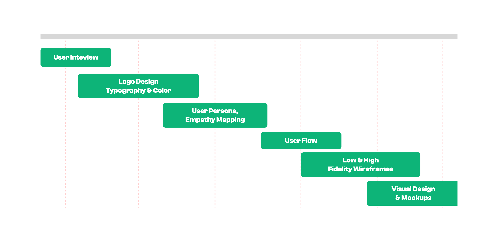
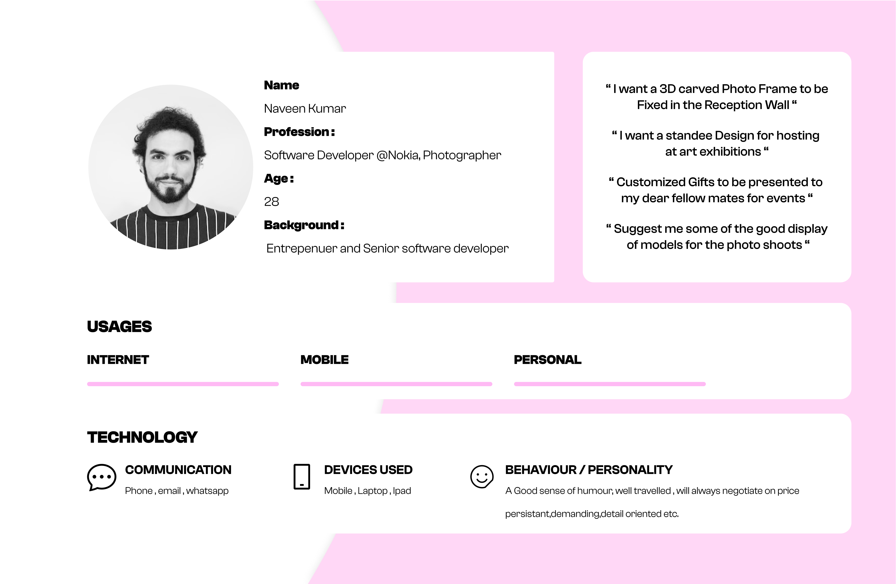
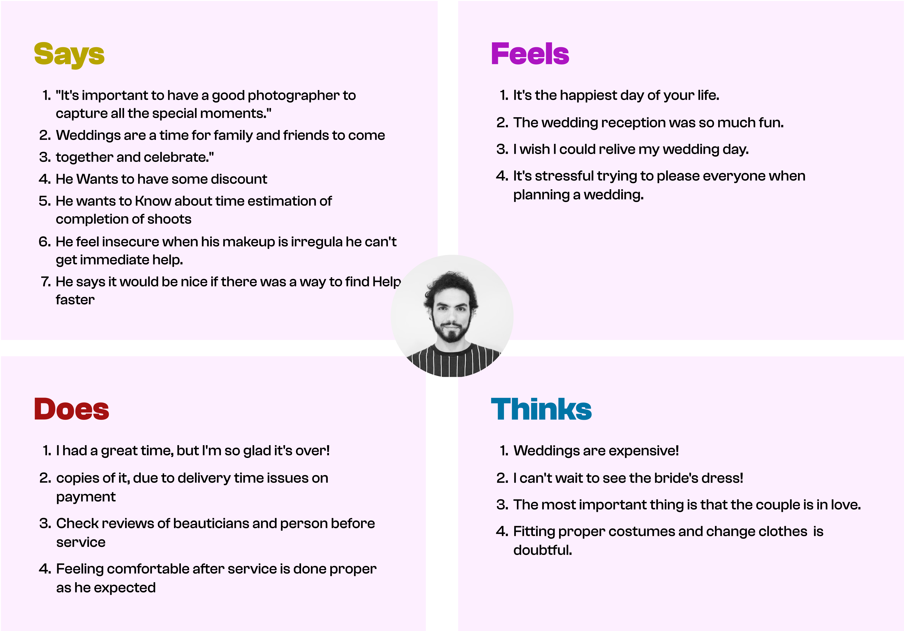
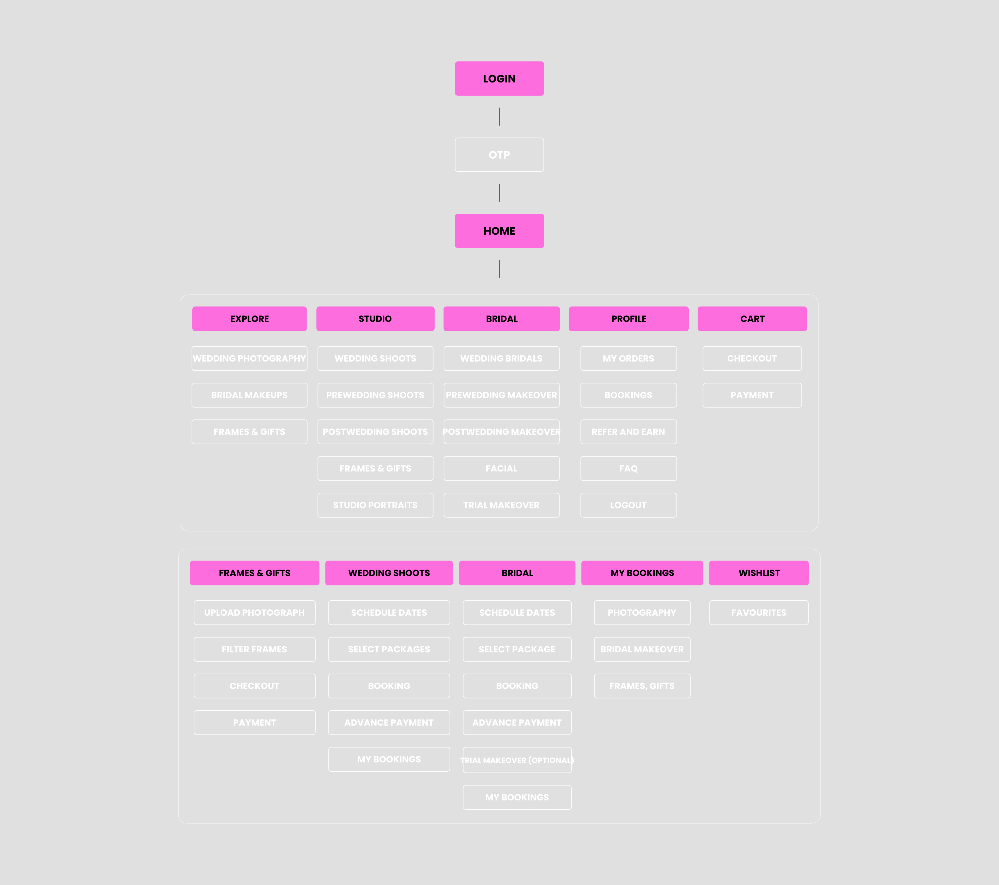
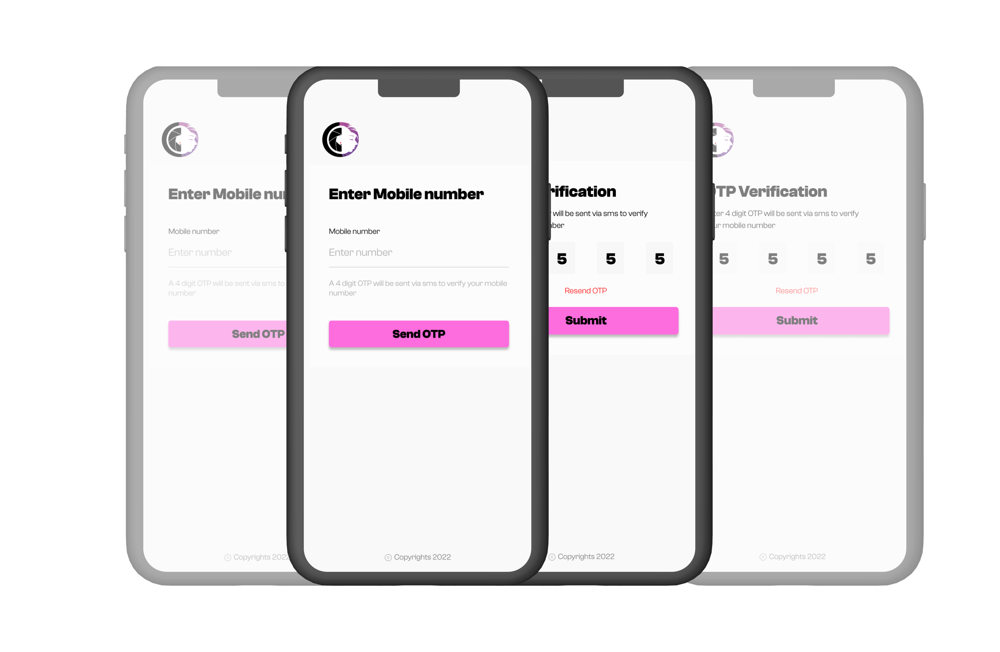
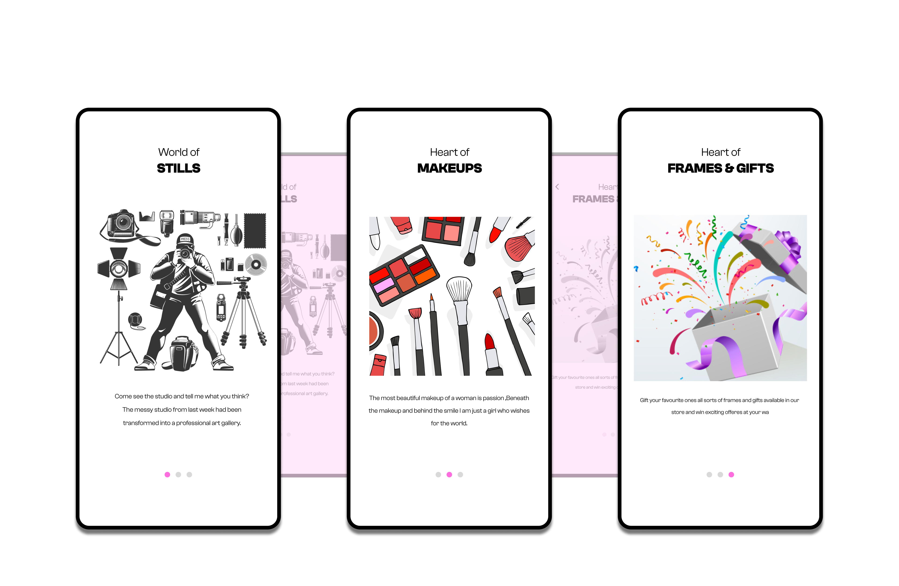
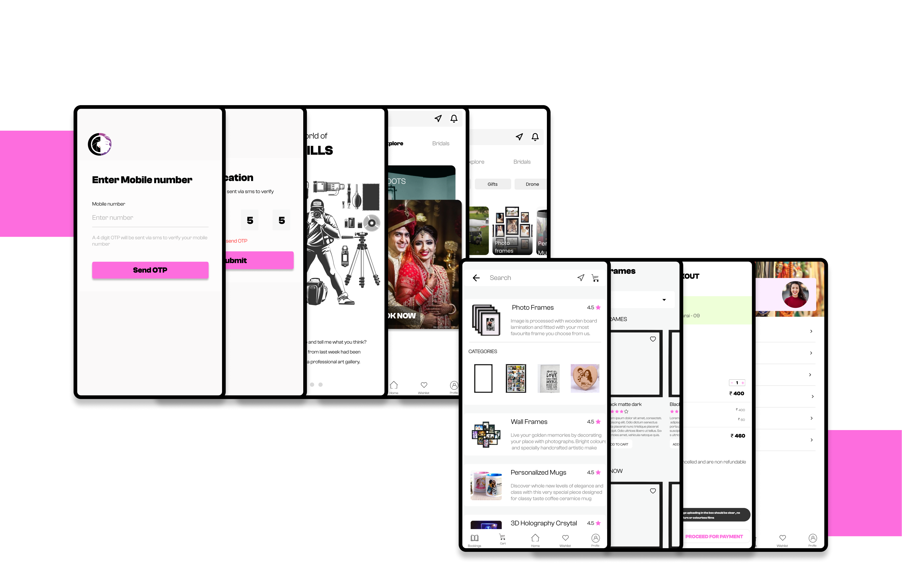
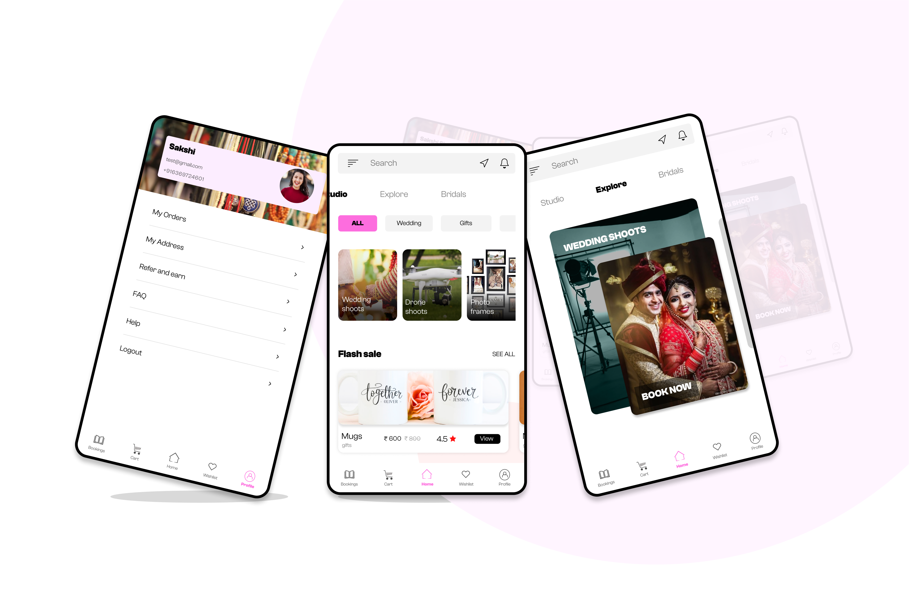

We experience Wedding are so precious. But Some common wedding-related problems could include issues with vendors, scheduling conflicts, guest list management, budget concerns, or unexpected situations that arise on the day of the wedding.
Here is the complete solution. Research and hire a professional wedding photographer who has experience shooting weddings and has a portfolio that you like. Research and book a professional makeup artist who has experience with bridal makeup and has a portfolio that you like without any hassle.
5+
Weeks
20+
Screens
My Role
Wedding Photography Questions
Do you own a car?
How often do you get your car serviced?
What you generally do when need help with car breakdown suddenly?
Which service centre you prefer for your car service authentic or local?
What difficulties do you faced while giving your car at centre?
How often you require any spare parts immediate when it is lost or damaged?
How was your last experience?
Would you need an application where you can get help 24*7 for your car?
Have you used anything similar before? If yes, what was so great in that?
Bridal Makeup Questions
What was the most important factor you considered when choosing a makeup artist for your wedding day?
What kind of makeup look were you hoping to achieve on your wedding day?
What was the biggest challenge you faced when planning your bridal makeup?
Were there any specific products or brands you wanted your makeup artist to use?
How did your makeup artist handle any unexpected situations that arose during your wedding day?
Was there anything you wish your makeup artist had done differently?
How did you feel about the final result of your bridal makeup?
Would you recommend your makeup artist to others?









